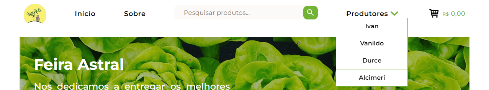
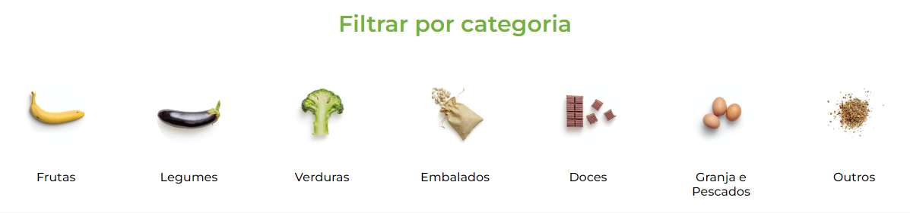
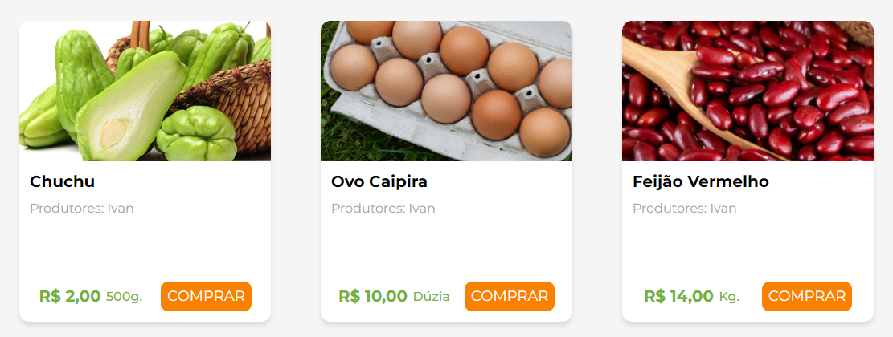

Home
Na página de Home ou Início estão disponíveis todos os produtos ofertados em nossa feira, através desta é possível escolher a quantia de produtos que será colocada no carrinho, para a posterior confirmação da compra. Também se pode dividir os produtos por categoria e por produtor. Abaixo estão algumas das principais funcionalidades da presente página:
Header
No cabeçalho do site está presente uma barra de navegação que direciona os usuários para as páginas Sobre e Carrinho. Também há a opção de pesquisar um produto através da barra de pesquisa e selecionar produtos de produtores específicos através do filtro.
Filtrar por Categoria
Nesta seção da Home é possível filtrar os produtos por categoria, como frutas e legumes. Essa filtragem pode ser feita por uma ou mais categorias.
Card de Produto
É através dessa seção que o cliente fará a seleção dos produtos que deseja colocar no carrinho. É possível selecionar de um produto até a sua quantia disponível.
